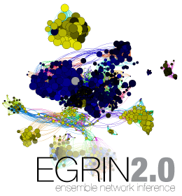

Aaron N. Brooks / PhD
-
 A system-level model for the microbial regulatory genome
A condition-dependent wiring diagram of the cell
-
Macromolecular networks and intelligence in microorganisms
Can studying microbes shed light on how our brains work?
-

Adaptation of cells to new environments
Even microbes have to keep up with the Joneses
-
A system-level model for the microbial regulatory genome
AN Brooks*, DJ Reiss*, A Allard, W Wu, DM Salvanha, CL Plaisier, S Chandrasekaran, M Pan, A Kaur, NS Baliga
Two genome-scale gene regulatory network models inferred directly from transcriptome measurements.
-
Macromolecular networks and intelligence in microorganisms
H Westerhoff*, AN Brooks*, E Simeonidis*, R García-Contreras*, F Boogerd, F He, VJ Jackson, V Goncharuk, A Kolodkin
Are microbes intelligent?

-
Adaptation of cells to new environments.
AN Brooks, S Turkarslan, KD Beer, FY Lo, NS Baliga
How do single-celled organisms keep pace with environments that constantly change?
Navigate with arrow keys